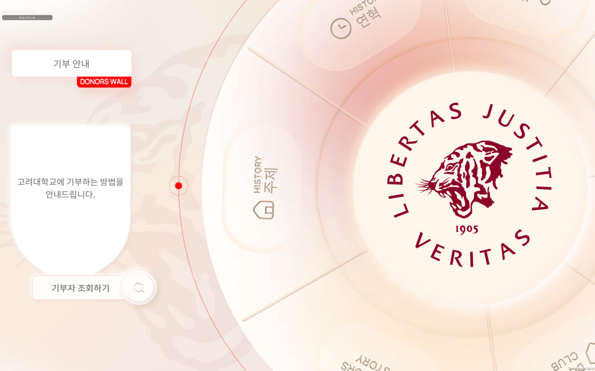
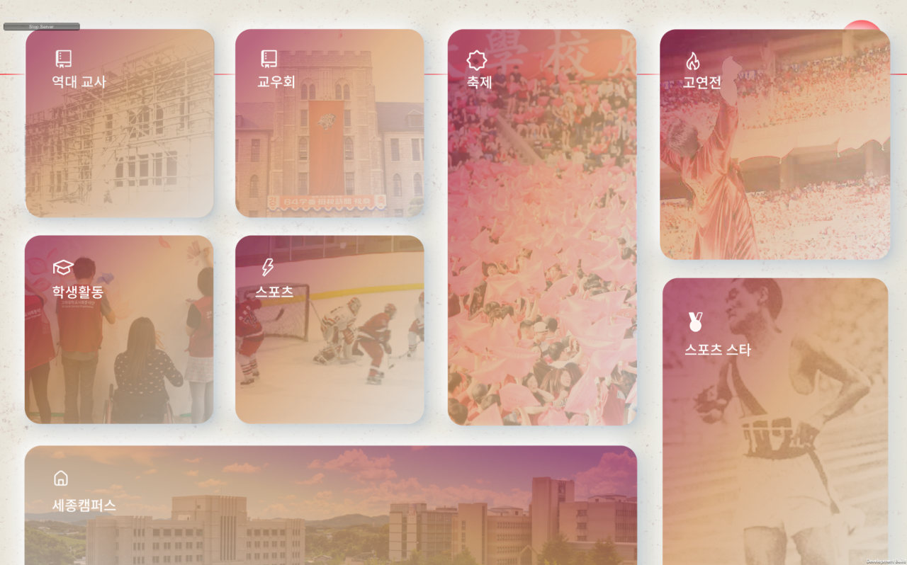

지니어트다이어트
온보딩 첫 질문"이번에 이루고 싶은 건강 목표는 무엇인가요?"
가설사용자가 고른 건강 목표에 맞춰 일일 챌린지 기준을 개인화하면, 동일한 기본 챌린지보다 리텐션이 높을 것이다.
확인할 지표
D7 · D30 리텐션챌린지 완료율A/B 온보딩
문제를 정의하고, 우선순위를 정하고, 실제 환경에서 작동할 때까지 끝까지 확인하는 서비스 기획자 지원자 진영은입니다. 서비스가 달라도 반복되는 이 방식으로 넛지헬스케어의 여러 건강 서비스에 기여하고 싶습니다.
넛지헬스케어는 캐시워크를 중심으로 건강관리 · 챌린지 · 정신건강 영역으로 서비스를 넓히고 있습니다. 도메인이 달라도 기획자가 반복하는 일은 같다고 생각합니다. 문제를 정의하고, 원인을 찾고, 팀이 실행할 수 있게 전달하고, 운영 데이터를 정리하는 일입니다.
걷기 · 리워드를 중심으로 한 넛지헬스케어의 대표 서비스
서비스 구성은 넛지헬스케어 채용 공고 기준 · 건강관리 · 챌린지 · 정신건강 영역
근거 · 01 여기옵서 불만 데이터로 v1 범위 결정
넛지에서는챌린지 · 리워드 기능의 우선순위를 사용자 불편 데이터로 정리하겠습니다.
근거 · 02 미디어월 오류 로그 없는 장애 역추적
넛지에서는출시 후 이슈를 재현 조건 · 원인 · 영향 범위로 정리해 전달하겠습니다.
3초 요약'비싼 물가'를 '예산에 맞는 곳을 비교하는 탐색 비용'으로 재정의하고, 데이터로 팀을 설득해 가격 필터를 v1에 먼저 넣었습니다.
막대 축 0–60% · 출처: 제주 관광 동향 공개 통계 (프로젝트 보고서 시장조사)
대회 기간 안에 실제 사용자 인터뷰는 진행하지 못해, 공개 통계와 직접 수집 · 라벨링한 관광지 이미지 약 120장을 근거로 판단했습니다.
사용자의 문제를 기능으로 구체화하고, 팀이 실행할 수 있는 형태로 전달하는 경험을 쌓았습니다.

3초 요약오류 메시지 없는 장애를 실패 지점부터 거꾸로 추적해, 증상이 아닌 실행 순서를 고쳤습니다.
화면 전환을 담당하는 부품이 꺼진 채 시작
화면 구성 요소를 불러오는 순서가 엉킴
오류 메시지 없음 · 문서 · 인수인계 없음
3년간 멈춘 Unity 프로젝트 · 문서도 인수인계도 없음
UI 패널이 오류 메시지 없이 전환되지 않음
코드와 실제 동작을 직접 대조하며 구조 파악
증상을 우회하지 않고 전환이 실패하는 지점에서 거꾸로
NetworkManager 비활성 초기화 → Prefab 로딩 순서 꼬임
활성 상태 전환 · 로딩 순서 재설계
Canvas Scaler · Anchor 재설계로 Full HD · 4K 대응
교내 전시 환경에서 작동 확인
패널 전환만 억지로 맞추면 원인이 남습니다.
초기화와 로딩 순서 자체를 바로잡았습니다.
수정에 그치지 않고, 실제 전시 장비 두 가지 해상도에서 모두 작동하도록 맞췄습니다.
제주 해커톤에서 개발 문제를 돕지 못했던 아쉬움을 이 프로젝트에서 직접 풀었습니다. 이슈를 원인까지 추적할 수 있으면 엔지니어와 같은 언어로 우선순위를 정할 수 있다는 것을 확인했습니다.


현상만 임시로 해결하는 데 그치지 않고, 원인을 추적하고 실제 사용 환경에서 작동하는지 확인하는 과정을 경험했습니다.
3초 요약여러 자료에 흩어진 활동 기록을 엑셀 '최종 기록지' 하나로 모으고, 직접 기획한 행사를 225명 규모로 운영했습니다.
KUSSO 6기 · 정보부원 · 시간왕
반복적으로 발생하는 운영 업무를 구조화하고, 정보가 일관되게 관리될 수 있도록 체계를 개선했습니다.
3초 요약세 모델을 같은 조건에서 20회 배깅 비교하고, 정확도(NDCG)와 일관성(Std)을 나눠 '목적별 선택 기준'으로 결론을 정리했습니다.
| Model | NDCG높을수록 좋음 · 주 지표 | MAE낮을수록 좋음 | RMSE낮을수록 좋음 | 예측 Std낮을수록 일관적 |
|---|---|---|---|---|
| CatBoost정확도 1위 | 0.9555 | 0.6890 | 0.8628 | 0.0784 |
| LightGCN일관성 1위 | 0.9528 | 0.7002 | 0.8693 | 0.0052 |
| MF-SGD | 0.9409 | 0.7003 | 0.8695 | 0.0189 |
노란 칸 = 지표별 최고값 · AI Hub 국내 여행로그 약 2만 8천 세션 · 시간 · 경로 특성은 비교 조건 통일을 위해 제외
NDCG 차이는 0.9555 vs 0.9528로 근소했고, 편차는 약 15배 차이가 났습니다. 그래서 '1위'가 아닌 목적별 기준으로 정리했습니다.
NDCG · MAE · RMSE 모두 1위
Std 0.0052 · 가장 일관적
추천은 '점수'가 아니라 '순서' 문제입니다. 점수를 잘 맞혀도 순서가 틀리면 사용자는 엉뚱한 장소부터 봅니다. 그래서 RMSE가 아닌 NDCG를 주 지표로 정했습니다.
전체 14개 변수 중 발췌 · 특성 중요도는 상관 기반 기여도이며 인과를 증명하지 않습니다.
여행 목적의 중요도는 성별의 약 14배였습니다. 데이터가 질문의 우선순위를 정해 준다는 것을 확인했습니다.
서비스 지표를 해석할 때 단일 수치에 의존하기보다, 지표의 의미와 서비스 목적을 함께 고려하는 태도를 갖추었습니다.
S-CURT에서 만족도를 가른 변수는 여행 목적 · 스타일이었고, 성별은 거의 영향이 없었습니다. 이 원리를 넛지헬스케어의 서비스에 옮겨 본 아이디어입니다. 모두 검증 전 가설이며, 각각 어떤 지표로 확인할지까지 함께 적었습니다.
가설사용자가 고른 건강 목표에 맞춰 일일 챌린지 기준을 개인화하면, 동일한 기본 챌린지보다 리텐션이 높을 것이다.
가설일상의 스트레스 요인을 먼저 묻고 명상 · 상담 콘텐츠를 매칭하면, 일반 피드보다 콘텐츠 시작률과 상담 전환율이 높을 것이다.
가설기업별 근무 환경과 참여 목적에 맞춰 웰니스 챌린지를 구성하면, 동일한 기본 프로그램보다 임직원 참여율이 높을 것이다.
전제특성 중요도는 상관 기반 기여도이며 인과를 증명하지 않습니다. 여행 도메인의 결과가 헬스케어에서도 성립하는지는 실험으로 먼저 확인해야 합니다. S-CURT에서처럼 지표 하나가 아니라, 서비스 목적에 맞는 지표로 판단하겠습니다.
하나의 서비스에서 얻은 인사이트를 다른 서비스로 옮길 때, 가설과 검증 지표를 먼저 세우는 방식으로 일하겠습니다.
넛지헬스케어의 서비스가 기획에서 출시와 운영으로 이어지는 과정에서, 문제와 이슈를 정확하게 파악하고 유관 부서와 명확하게 소통하며 실행을 지원하겠습니다.
기능 우선순위의 근거를 정리하겠습니다.
← 01 여기옵서 · 03 KUSSO이슈가 생기면 재현 조건과 원인, 영향 범위부터 정리하겠습니다.
← 02 미디어월기획 의도를 개발 · 디자인 · QA · CS가 바로 실행할 수 있게 전달하겠습니다.
← 01 여기옵서 · 04 S-CURT